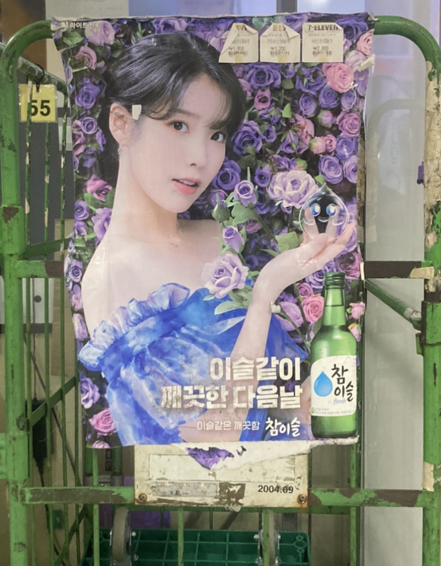
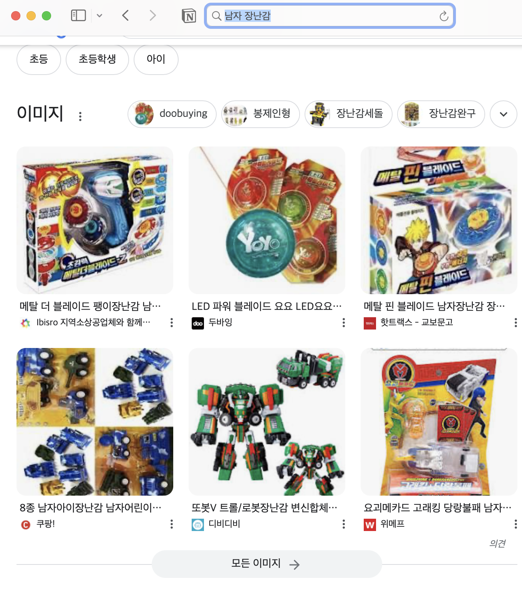
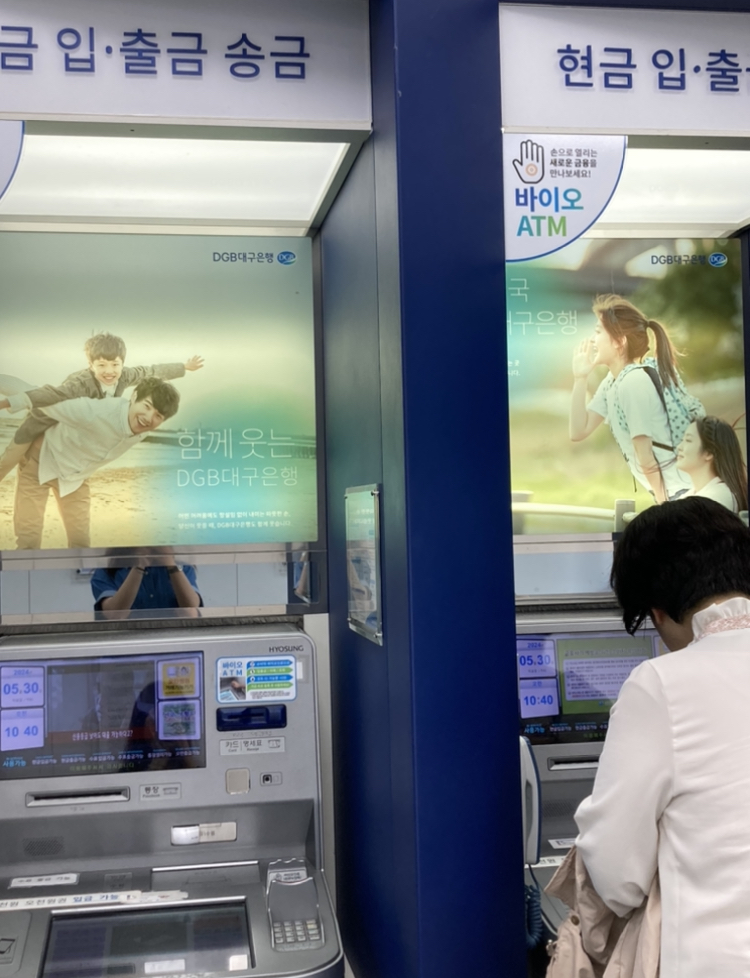

사회적 차별 이미지
 사회적 차별 이미지 설명
어릴 적부터 교과서에서 강하고 책임감 있는 직업, 역할은 당연히 남자가, 꼼꼼하고 섬세해야 하는 부분에서는 여자가 맡는 것이 당연하듯이 나타났다. 사회에는 너무나도 자연스럽게 편견이 내포되어 있어 사람들은 다양성을 인정하고 포용하는 것이 어색할 수 있다. 주변에서 볼 수 있는 포스터들만 봐도 사회의 인식이 얼마나 고정관념에 갇혀있는지 알 수 있다. 술 광고에서 여성을 모델로 선정한 이유에는 사람들에게 인기가 많고 유명해서도 있겠지만, 여성을 주로 성적 대상화하고 음주를 긍정적인 이미지로 표현하기 위해서다. 또한 식혜를 보면 할머니의 이미지가 그려져 있다. 할머니 그림을 사용하는 것은 전통적 이어 보일 수 있지만, 할머니와 식혜를 과거, 옛날의 것으로 여기고 시대에 뒤떨어진 느낌을 형성한다. 모든 연령층과 배경을 대표하는 다양한 그림을 사용함으로써 식혜를 단순히 옛날 느낌이 아닌 새로운 느낌으로 사람들에게 다가가게끔 하면 어떨까? 유아용 장난감만 보더라도 여자아이와 남자아이의 구분을 확실하게 짓고 있다. 분홍색, 공주, 요정, 치마, 보석, 반짝이는 느낌, 하트, 귀여운 이미지는 여자아이의 장난감, 색칠놀이 책에 등장한다. 반대로 남자아이의 장난감을 인터넷에 검색해보았을 때, 주로 로봇, 팽이, 자동차와 같은 기계적, 구조적이다. 이는 남녀 차별적인 고정관념을 강화하는 문제점을 갖고 있다. 이러한 구별은 어린 시절부터 성별에 따른 특정 역할을 주입하여 아이들의 자율성을 저하한다. 사회가 말하는 편견 없는 세상이 되려면 아이들의 첫걸음부터 바로 잡아 고정된 성 역할에 구애받지 않고 성장할 수 있도록 해야 한다. 또한, 매체에는 날씬하고 예쁜 사람만 노출되는 현상에도 문제점을 지적할 수 있다. 마른 사람들의 이미지가 이상화되면서 다이어트, 제품, 미용 산업, 패션 등이 이익을 얻게 되는 구조가 된다. 특정한 외모와 신체 기준을 강요하면서 자연스레 외모지상주의가 생겼고 이는 사람들이 자신을 평가하게 되는 기준이 되고 다양한 체형과 외모의 포용성이 줄어든다. 이러한 현상은 불안감과 열등감을 조작하는 정치적 행위이다.
문화 도용의 이미지
문화 도용의 이미지 설명
인터넷에서 잘못된 문화를 알리는 이미지들도 모아봤다. 왼쪽에서 첫 번 째, 두 번 째 사진은 한복과 한국의 전통적인 느낌을 중국의 문화임을 알린다. 요즘 한국의 정서가 잘 드러나는 아이돌의 의상과 음악 영상을 보면 중국인들이 자신의 문화라고 우기는 이슈가 생긴다. 이러한 논란이 오가는 상황에서 위와 같은 이미지들을 매체에 노출한다면 문화의 출처를 정확히 모르는 외국인들은 한국, 중국 누구의 문화인지 헷갈리며 문화를 왜곡하여 기억하게 된다. 세번 째는 일본의 섬 지도인데, 독도를 당당하게 표시하고 있다. 일본의 독도에 관한 주장은 역사적으로 많은 논란을 빚어왔다. 독도는 한국의 땅으로 인정받는다. 위 이미지는 역사 왜곡, 국제적 갈등 등을 초래한다. 이러한 상황에서 독도가 일본의 땅임을 주장하는 포스터, 이미지들은 역사적 사실과 국제적 상황을 고려해서 제작되어야 한다.
나의 생각, 느낀 점
위 이미지들은 주변에서 발견한 차별이 덜 느껴졌던 경우들이다. 은행 ATM기는 남녀 모두를 모델로 하였고 공장일을 하는 사람, 아빠와 아들, 친구사이 등등 다양한 연령층, 상황을 나타내고 있다. 또한, 경찰 포스터는 당연히 남자 경찰이 먼저 앞에 있을 거라 생각하고 유심히 관찰하였는데 뜻밖에 여자 경찰이 총을 들고 중간에 위치한다. 능력과 역량이 성별에 얽히지 않고 남녀 간의 평등과 상호 존중을 장려하는 데에 좋은 영향을 주는 포스터다. 장애, 성, 인종 등을 분류하지 않고 중립을 지키는 디자인 사례는 또 어떤 것들이 있는지 궁금해진다. 중립적인 디자인은 어떻게 접근해야 할까? 포괄적인 메시지를 전달하고 다양성을 반영하는 디자인일까? 중립의 정의를 확실히 할 수 있을까? 많은 궁금증이 생기는 과제였다.